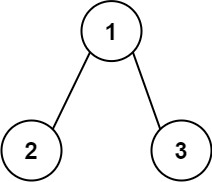
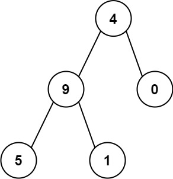

129. 求根节点到叶节点数字之和
DFS 沿途拼数字 cur = cur * 10 + val，到叶子把 cur 累加进答案；每个分支从父结点的 cur 接着拼。
思路
dfs(node, cur)进结点先cur = cur * 10 + node.val，把拼到一半的数字往下带。- 叶子（两个孩子都是
null）返回cur：这条路径的数字拼完了。 - 非叶子返回
dfs(left) + dfs(right)；单孩子结点不是叶子，空的那边自然返回 0。 - 值只有 0~9，没有负数；单结点树自己就是叶子，直接返回它的值。
图解
最优解
1class Solution {2 public int sumNumbers(TreeNode root) {3 return dfs(root, 0);4 }5 6 // cur：从根到当前结点拼好的数字7 private int dfs(TreeNode node, int cur) {8 if (node == null) return 0;9 cur = cur * 10 + node.val;10 // 叶子：这条路径的数字拼完了11 if (node.left == null && node.right == null) return cur;12 return dfs(node.left, cur) + dfs(node.right, cur);13 }14}题目
给你一个二叉树的根节点
root ，树中每个节点都存放有一个 0 到 9 之间的数字。
每条从根节点到叶节点的路径都代表一个数字：
- 例如，从根节点到叶节点的路径
1 -> 2 -> 3表示数字123。
计算从根节点到叶节点生成的 所有数字之和 。
叶节点 是指没有子节点的节点。
示例 1：

输入：root = [1,2,3] 输出：25 解释： 从根到叶子节点路径1->2代表数字12从根到叶子节点路径1->3代表数字13因此，数字总和 = 12 + 13 =25
示例 2：

输入：root = [4,9,0,5,1] 输出：1026 解释： 从根到叶子节点路径4->9->5代表数字 495 从根到叶子节点路径4->9->1代表数字 491 从根到叶子节点路径4->0代表数字 40 因此，数字总和 = 495 + 491 + 40 =1026
提示：
- 树中节点的数目在范围
[1, 1000]内 0 <= Node.val <= 9- 树的深度不超过
10
题面取自力扣当前版本。
数据快照 2026-11-04。题面版权归力扣所有，本站点仅供本人学习使用，请勿对外发布。